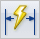
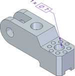
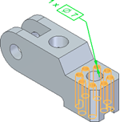
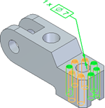
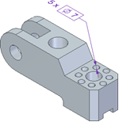

Dimension similarly sized holes
You can create dimensions for holes of the same type, diameter, and depth. Such dimensions are added as parent dimensions when you export the features to STEP or JT format.
Select the check box, Add similar sized holes as a reference geometry to hole dimension available on the Feature Callout tab while specifying dimension styles. For more information, see Define smart feature properties in the Dimension style.
-
On the Home tab, click Smart Dimension

.Alternatively, you can click Smart Dimension on the PMI tab.
-
Select a hole to dimension it.
By default, the diameter dimension is created. In the Smart Dimension dialog box, under Properties, you can select the other available smart dimension types.

-
Under Tolerance, click Prefix
 .
. In the Dimension Prefix dialog box, you can assign the required specifications and save them. This way the specifications are readily available while creating or editing the smart dimension.
-
In the Prefix box, enter %QD x and then click OK.
For more information on other prefixes for dimensioning holes, see Hole Quantity Note.
-
Under Other, click Referenced Geometry
 .
.All the holes with the same type, diameter, and depth are highlighted.

-
Select the edges or the faces of the highlighted holes to consider them for hole dimensioning and then click Accept
 .
.To clear the selection, hold Shift and click the edges or the faces of the required holes.

-
To place the dimension, click in the work area.
The dimension displays the number of selected holes with their specifications.

Note:The holes which are already dimensioned are not considered.
How do I
Example: Dimension the length of a lineExample: Dimension the diameter of a circle
Example: Dimension a curved slot
Place concentric diameter dimensions
Place a feature callout dimension
Place a 3D dimension on a pictorial drawing view
Define smart feature properties in the Dimension style
Look up more details
Smart Dimension commandSmart Dimension command bar